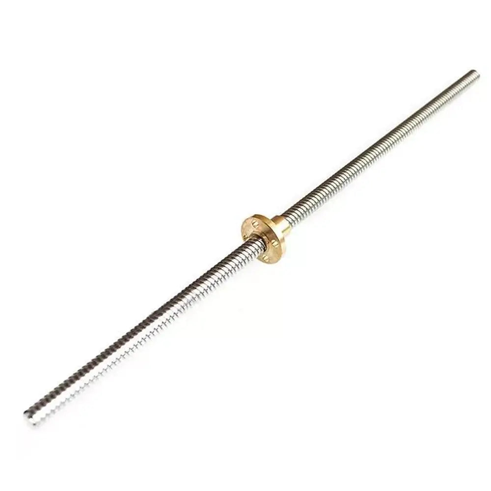

O eixo Z é responsável pelo movimento vertical da plataforma de impressão. A lubrificação adequada garante movimentos suaves e precisos, evitando desgaste prematuro e problemas de impressão.

📋 Quando Lubrificar:
- A cada 100 horas de impressão ou mensalmente (o que ocorrer primeiro)
- Quando ouvir ruídos durante o movimento do eixo Z
- Se notar movimentos irregulares ou travamentos
- Após limpeza profunda da impressora
🛠️ Como Lubrificar:
- Desligue a impressora e remova o tanque de resina
- Limpe o eixo Z com papel higiênico ou pano de microfibra limpo e seco para remover resíduos (não use estopa, pois solta fiapos!)
- Aplique lubrificante apropriado (óleo de máquina ou graxa para impressoras 3D)
- Movimente o eixo manualmente para cima e para baixo para distribuir o lubrificante
- Remova o excesso com um pano limpo
- Teste o movimento ligando a impressora e verificando se está suave
💡 Dica Profissional:
Use lubrificantes específicos para impressoras 3D ou óleo de máquina de boa qualidade. Evite WD-40 ou lubrificantes à base de silicone, pois podem atrair poeira e causar problemas.
⚠️ Atenção:
Não aplique lubrificante em excesso! O excesso pode escorrer e contaminar a tela LCD ou o filme FEP, causando falhas de impressão.